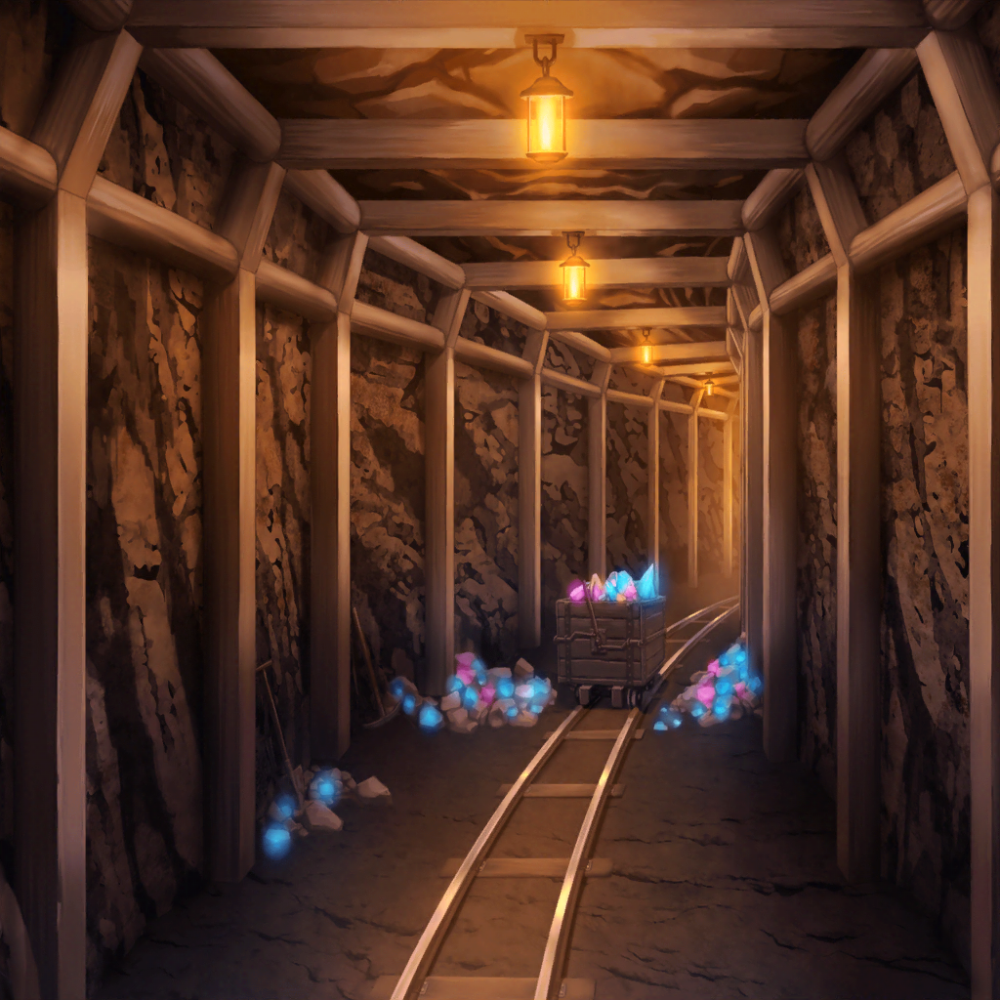
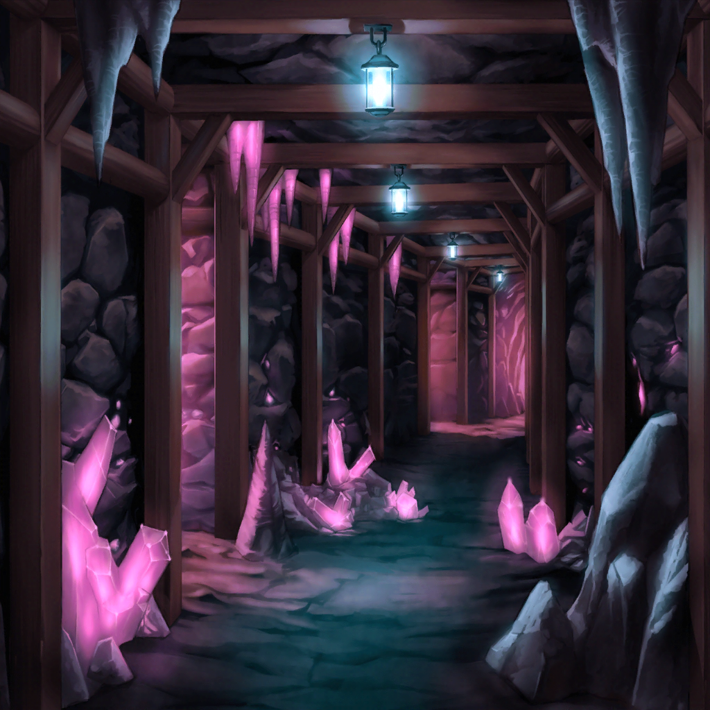

ロゴロ鉱山
RinRin
このまま、まっすぐ行くとリンダさんの所に着きます。
もうちょっとですよ(ﾉ'ω')ﾉ
ユキナ
……やっと着くのね
リサ
あれ？ 友希那、ちょっと疲れてるんじゃないの？
ヒールしよっか？
ユキナ
平気よ
聖堕天使あこ姫
ていうか、HP満タンだから意味ないよ……リサ姉……
リサ
えーほんと〜？
サヨ
あの……
リサ
ん？ どうしたの、紗夜？
サヨ
いえ……何かあちらから大きなものが近づいてくるのですが……
リサ
ほんとだ！ でっか！ 何あれ！
あこ姫&RinRin
！！！！！
RinRin
あこちゃん……あれって……(((( ;ﾟдﾟ))))
聖堕天使あこ姫
フィールドボスだーーー！！
ユキナ
フィールド……ボス？ 何なのか説明して
RinRin
この辺り一帯の主みたいなものです。
さっきのヘルスケルトンソルジャーよりも
危険なモンスターで……
リサ
マジ！？ どうすんの！？
RinRin
だ、大丈夫です。
とりあえず近づいて、足元をそっと歩いていれば、
見つからないので……
サヨ
なるほど……灯台下暗し、ということですか
聖堕天使あこ姫
そーっと……そーっと
リサ
うわーなんかめっちゃ手汗でるんだけど……
サヨ
……！
RinRin
氷川さん……あの、だから盾は構えなくても……
リサ
ちょっ！？ 友希那！？
RinRin
友希那さん！ そっちはダメです！
ユキナ
なぜか歩き続けてしまうのだけど、これはなに？
聖堕天使あこ姫
もしかしてオートラン押しちゃった！？ りんりん！
このままじゃ友希那さんがボスの視界に入っちゃうよ！？
RinRin
あこちゃん！
今井さんと氷川さんを足元に誘導して！
うまくいったらアンデッドプレイでやり過ごして！
聖堕天使あこ姫
う、うんっ！
サヨ
アンデッドプレイ……？
聖堕天使あこ姫
死んだふりをして敵に気づかれなくなる、
あこの得意スキルですっ！
サヨ
死んだふりが得意なんですか……
リサ
でも友希那はどうするのっ！？
RinRin
ブラインドカーテン！！
あこ姫&RinRin
ふー……
リサ
……これで大丈夫なの？
RinRin
はい、やり過ごせました ε-(;ーωーA
聖堕天使あこ姫
友希那さん、
オートランは自動で歩いちゃうボタンなので
間違えて押しちゃダメですよ〜
ユキナ
一体どこを押したのかわからないわ……これ？
聖堕天使あこ姫
わわわわっ！
もう大丈夫ですっ！ そのままで大丈夫ですっ！
リサ
でもなんでボスに見つからなかったの？
聖堕天使あこ姫
りんりんのブラインドカーテンは姿を消すスキルなんだっ！
めっちゃくちゃ効果時間が短いから、
あこはあんなに上手に使えないんだけど……
リサ
へえーすごいんだね、燐子って！
RinRin
そんなことないです(*ﾉωﾉ)
サヨ
それにしても……安全だと言っていたのに
思ったより危険な場所ですね……
聖堕天使あこ姫
で、でもここまでくれば……っ！
RinRin
うん、リンダさんはすぐそこだよ( 'ω' )/

ロゴロ鉱山・祭儀場
聖堕天使あこ姫
いたーー！ リンダさんっ！
リサ
ほんとだ！ やっと見つけた〜☆
RinRin
それじゃあ、あこちゃん
聖堕天使あこ姫
うんっ！ 『手紙を渡す』
リンダ
あなた達は……え？
ジェイクから手紙……？
まぁ……ありがとう、そうだちょっと待って
リンダ
申し訳ないのだけれど、この手紙をジェイクに渡してほしいの。
私は……まだ帰れないから……よろしくね
ユキナ
今度はこの手紙を村に持って帰るのね
サヨ
まるで伝書バトですね……
リサ
にしても、こんな近くなのにどうして
ジェイクさんはリンダさんに会いに来ないの？
RinRin
それには深い事情があって……
聖堕天使あこ姫
リンダさんはここに強いモンスターを封印するために来てるんだ！
でも、ジェイクさんみたいな旅立ちの村に住んでる人はしきたり？
で、この鉱山に入っちゃいけないんだって！
RinRin
ジェイクさんとリンダさんは
こうやって何万回も手紙のやりとりをしているのに……
絶対に会えないんです(TдT; )
リサ
そっか……なんか切ない感じなんだね……
ユキナ
そんなことより、ここでの用事はこれで終わりなんでしょう？
RinRin
はい、あとはこの手紙を持って村に戻るだけです
リサ
オッケー！ あとちょっとだね☆